About
I build software like a passive house:airtight,
2026 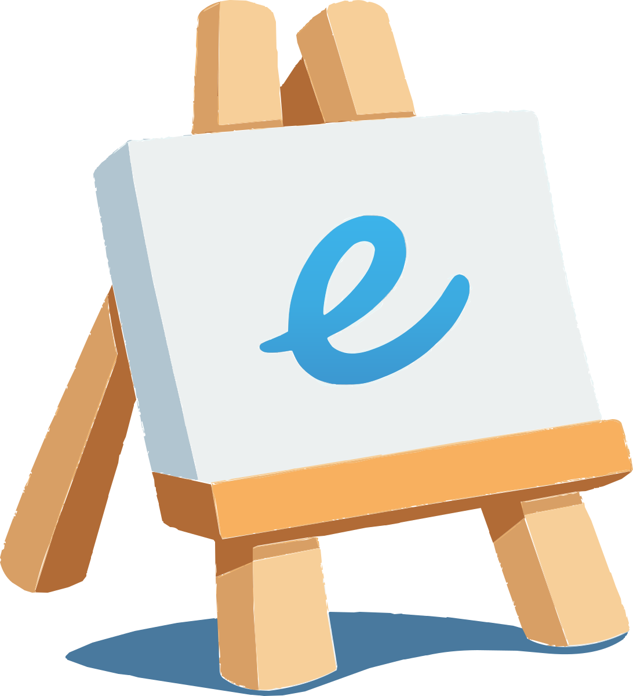
ezel A modern visualization library in Rust, Python, JS.
GPU-accelerated rendering and incremental data updates.
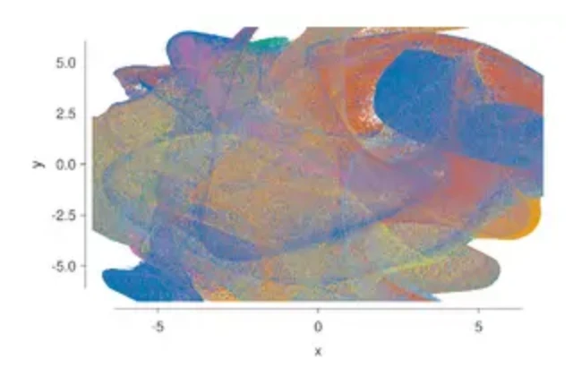
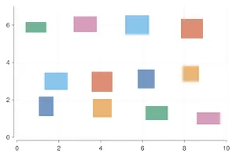
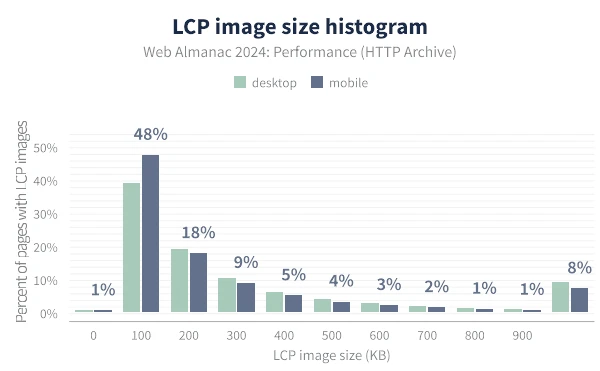
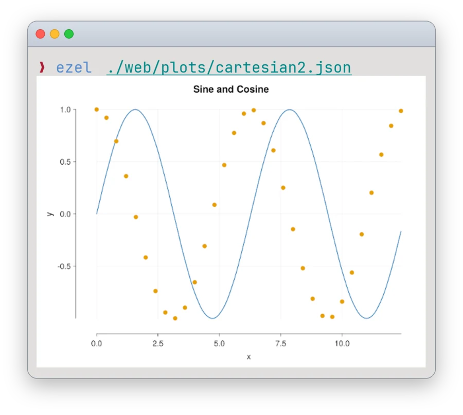
Database drivers All four libraries are the fastest in the Rust and Python ecosystems.
2025 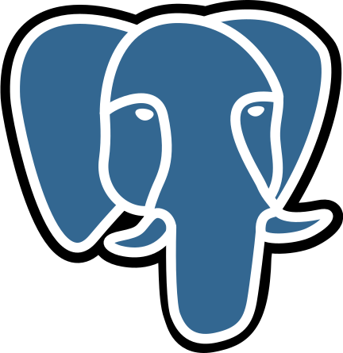
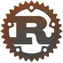
1.6x vs tokio-postgres
2025 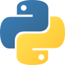
3x vs psycopg
2025 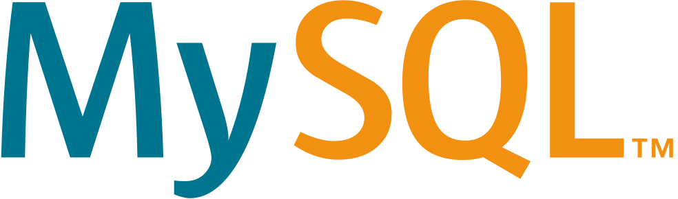
zero-mysql A MySQL client library for Rust.
zero-mysql understands the variants (Oracle MySQL, MariaDB, Percona) and uses the extensions whenever applicable.
For example, it implements MARIADB_CLIENT_STMT_BULK_OPERATIONS, which bulk-inserts much faster (20–100x) than other libraries.
2025 1.9x vs mysqlclient
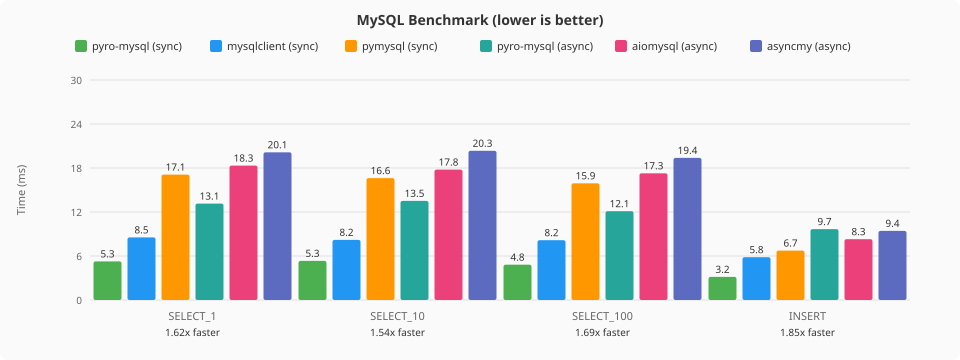
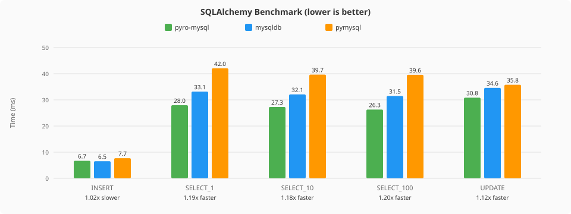
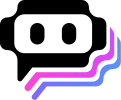
Poe poe.com
300 API latency
Proposed and led a modernization project.
Wrote a Python async runtime that bridges the legacy asynq to asyncio.
Implemented a novel auto-batching scheme for concurrent SQL queries.
Tuned performance with a custom allocator, PGO and kernel settings.
Wrote asynchronous sharding clients for Redis, MySQL, memcached and others.
Fixed critical bugs in redis-py, aiomemcache and other popular Python libraries.
Quora Infra Engineer
Led the modernization of the codebase and provided technical insights.
Replaced Redis keys that stored 100 to 100,000 timestamps for rate limits with a single integer, by implementing GCRA.
Wrote manuals for many teams, from Spark best practices for data engineers to an introduction to systemd for infra engineers.
Cut AWS costs by a few thousand dollars a day.
Personal Projects
2023 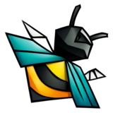
mybee An eBPF profiler for MySQL.
This is faster than other eBPF solutions because it reuses what mysqld has already parsed.
2023 downtown A realtime BPF profiler.
On-the-fly attachment to a production process without code changes.
PrestoLabs
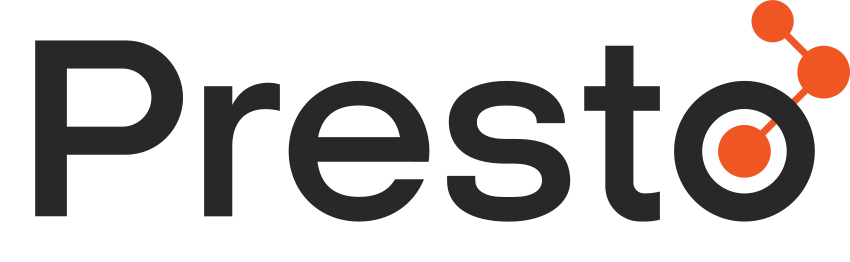
2020–2022 Quant Researcher and Developer
2021 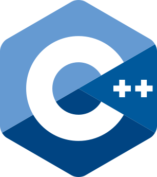
C++ trading framework
The Python strategies were losing their edge, so we needed a faster framework.
Wrote a significant portion of the new framework.
Created conda-forge packages for popular low-latency C++ libraries.
conda-forge/mimalloc-feedstock
conda-forge/simdjson-feedstock
conda-forge/doctest-feedstock
2020 vitro A C++ binding to matplotlib (github.com/elbaro/vitro)
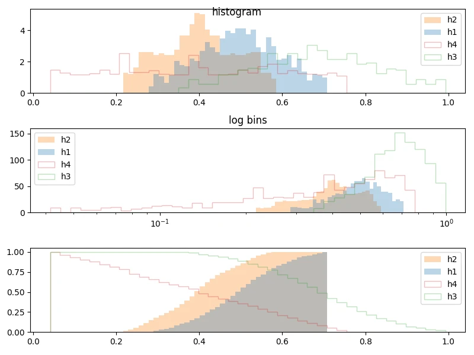
Estsoft
2016–2020 AI Researcher
College
2011–2015 MIT, Computer Science and Engineering
Internships
2015 Google Worked on Chrome and Chromium.
2014 Microsoft Built neural-network and linear-regression models for information retrieval, using CUDA and papers from 2014 ML conferences.
2013 Indeed.com Improved search-engine quality; visualised decision trees and worked with Hadoop and Lucene.
Competitive Programming
2014 ACM-ICPC Boston Pre-regional
2014 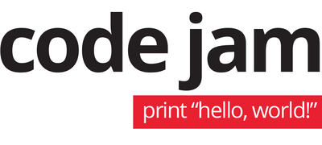
Google Code Jam T-shirt winner (Top 500)
2013 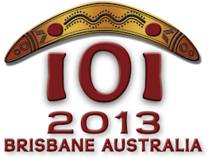
International Olympiad in Informatics Training Assistant, Korea Team
2011 Google Code Jam T-shirt winner (Top 500)
2011 Startup Springboard Boston
2011 ACM-ICPC Boston
2011 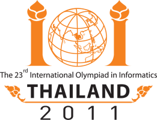
International Olympiad in Informatics Training Assistant, Korea Team
Projects
2015 Flow Rounding with James Payor (arxiv.org/abs/1507.08139)
An O(m log(n²/m)) cycle-canceling algorithm for rounding a fractional flow to an integral one, covering both costed and randomized rounding.
Cited by 24 papers, 10 of them at FOCS, SODA and STOC.
2013 Ant House, an iOS game with Richard Park (MIT EECS)
Learned Objective-C, built the game, tested it with real users and presented it at a showcase. Received offers to productionize the game.
Designed a better way to use touch input in real-time strategy games on mobile.
2013 Project PenKey MIT Media Lab, 2012–2013 · with Ho Jin (Samsung Electronics), supervised by Pattie Maes
Built a pen-shaped device that copies from and pastes to multiple Android devices.
Implemented ultrasonic communication with Android, including signal processing, embedded programming and a custom Android ROM.
Collaborated with circuit designers and 3D-printing professionals.
Before college
2008–2010 High school